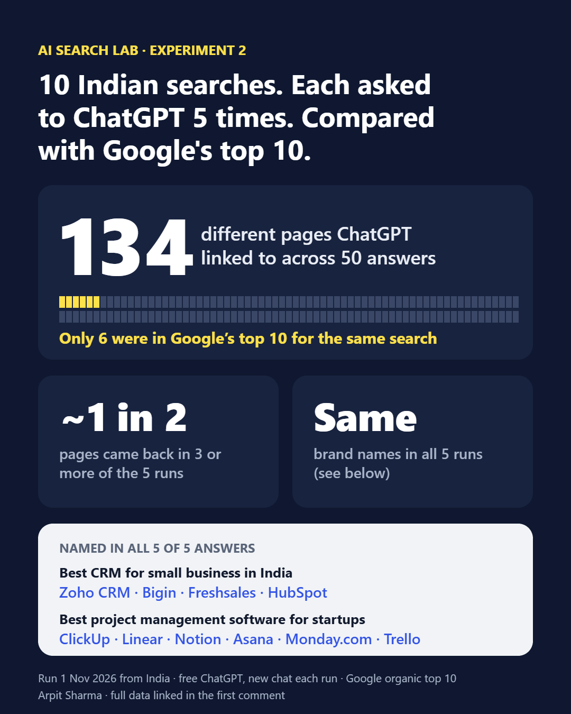

What I found
Ranking in Google's top 10 was not what got a page into ChatGPT's answer. Of the 134 different pages ChatGPT linked to, only 6 were in Google's top 10 for the same search. At the website level the overlap was bigger: about 1 in 5 of the sites ChatGPT used also had some page in Google's top 10.
The pages kept changing between runs. The brand names didn't. About half the pages showed up in 3 or more of the 5 runs, and 30 showed up in all 5. But for two searches, the same set of brands was named in every single answer.
About 2 in 3 links went straight to the source. Of the 134 pages, 69 were a brand's or institution's own home, product, pricing or store page, and 16 were government or regulator sites. The other 49 were comparison, review and "best of" articles. For "how to file ITR online", every link was a government site, starting with incometax.gov.in, which was also Google's first result.
One odd result. In one run of "best laptop under 50000 in India", ChatGPT linked to shops in Hungary, the UK and Singapore (allegro.hu, currys.co.uk, sg-store.msi.com) for an Indian price question.

Search by search
| # | Search | Pages | In 3+ runs | In Google top 10 |
|---|---|---|---|---|
| 1 | best CRM for small business in India | 14 | 8 | 1 |
| 2 | best accounting software for small business in India | 16 | 9 | 1 |
| 3 | best term insurance plan in India | 8 | 3 | 1 |
| 4 | best laptop under 50000 in India | 11 | 2 | 0 |
| 5 | best online MBA in India | 18 | 7 | 0 |
| 6 | best SEO tools for beginners | 24 | 12 | 0 |
| 7 | best project management software for startups | 15 | 11 | 1 |
| 8 | how to file ITR online | 7 | 3 | 1 |
| 9 | how to start a small business in India | 7 | 6 | 0 |
| 10 | best digital marketing course in India | 14 | 8 | 1 |
| Total | 134 | 69 | 6 |
"Pages" means different links across the 5 answers to that search, after removing tracking parameters, www. and trailing slashes. The 6 pages that were also in Google's top 10: hubspot.com/products/crm, zoho.com/in/books, a Ditto term-plan guide, a Waveup startup PM roundup, incometax.gov.in/iec/foportal, and a Kraftshala course roundup.
Brands named in all 5 answers
Zoho CRM · Bigin · Freshsales · HubSpot
ClickUp · Linear · Notion · Asana · Monday.com · Trello
The links behind these answers changed from run to run. The shortlist didn't. If you sell in a category like this, the question isn't only "do I rank?" but "am I on the shortlist the AI keeps repeating?"
What I'd do with this
- Keep doing SEO. About 1 in 5 of the sites ChatGPT used also ranked in Google's top 10, and for tax filing it linked to Google's first result.
- Fix your own product and pricing pages first, then get onto the comparison pages AI cites. ChatGPT linked to brands' own pages more than anything else, and about a third of its links were roundups and reviews.
- Test more than once. One answer is a sample, not a result. Run the same question several times before you decide where you stand.
How I ran it
- ChatGPT: free plan, a new temporary chat for every run, 1 Nov 2026 between about 14:30 and 15:35 IST, from India. 50 answers: 45 from gpt-6-mini and 5 from gpt-6 (ChatGPT chose the model).
- What counted as a link: the sources ChatGPT showed as citations, plus links written into the answer. For search 9 only links in the answer are counted.
- Google: google.co.in in English (
hl=en&gl=in), searched at about 14:22 IST on the same day, logged in. Organic results only; ads, videos and "People also ask" excluded. All 10 searches showed an AI Overview, which I did not count. - Brands were taken from the product names ChatGPT tagged in its answers.
- Link types were sorted by hand into three groups (Link types tab in the sheet). Roundups on a vendor's own blog count as articles.
- Every row, with the chat ID it came from, is in the public data sheet (Results log, Summary, Link types and Method tabs). The summary numbers are formulas over the log, so you can check them.
Limits
- Small test: 10 searches, one account, one location, one afternoon. It shows a pattern, not a law.
- The runs were typed and logged by my AI assistant in my ChatGPT account, following a fixed script. I didn't save screenshots; the chat IDs are logged instead.
- Google was searched while logged in, so results may be slightly personalised.
- One run of search 1 was lost to a timeout. It wasn't counted and was run again.
- It compares exact pages. A site can still matter to ChatGPT through a different page than the one Google ranks.
For a bigger picture, Ahrefs found that about 12% of links cited by ChatGPT, Gemini and Copilot were in Google's top 10 for the same query (15,000 prompts, published 11 Aug 2025). My 4% is lower, on a much smaller and India-only sample.
Want this test for your business?
I'll run one question your customers ask through ChatGPT, Gemini, Perplexity and Google AI Mode, and show you who gets named, which sources they lean on, and three fixes. Free. Get your AI snapshot or follow AI Search Lab on LinkedIn.